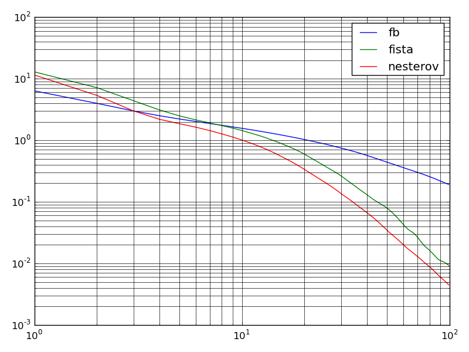

Test the use of Forward-backward-like splitting for the resolution of a compressed sensing regularization
Script output:
[fb]: Performed 1000 iterations in 0.147185087204seconds.
[fista]: Performed 1000 iterations in 0.164345979691seconds.
[nesterov]: Performed 1000 iterations in 0.285757064819seconds.
Python source code: plot_l1_lagrangian_fb.py
# Author: Samuel Vaiter <samuel.vaiter@ceremade.dauphine.fr>
from __future__ import division
print __doc__
# modules
import time
import numpy as np
import pylab as plt
from pyprox import forward_backward, soft_thresholding
n = 600
p = n//4
la = 1.0 # regularization parameter
# Matrix and observations
A = np.random.randn(p,n)
y = np.random.randn(p,1)
# List of benchmarked algorithms
methods = ['fb', 'fista', 'nesterov']
# operator callbacks
F = lambda x: la*np.linalg.norm(x,1)
G = lambda x: 1/2*np.linalg.norm(y - np.dot(A,x)) ** 2
ProxF = lambda x,tau: soft_thresholding(x, la*tau)
GradG = lambda x: np.dot(A.T,np.dot(A,x) - y)
L = np.linalg.norm(A, 2) ** 2 #Lipschitz constant
callback = lambda x: F(x) + G(x)
maxiter = 1000
res = np.zeros((maxiter,len(methods)))
i = 0
for method in methods:
t1 = time.time()
x, fx = forward_backward(ProxF, GradG, np.zeros((n,1)), L,
maxiter=maxiter, method=method,
full_output=1, retall=0, callback=callback)
t2 = time.time()
print "[" + method + "]: Performed 1000 iterations in " \
+ str(t2-t1) +"seconds."
res[:,i] = fx
i += 1
e = np.min(res.flatten())
plt.loglog(res[:(maxiter // 10),:] - e)
plt.legend(methods)
plt.grid(True,which="both",ls="-")
plt.tight_layout()
plt.show()